- 一무엇이 지워젓나
소화 십일 년 팔월, 한 조선 청년의 사진에서 — 무언가 하나가 사라젓소.
- 二누가, 왜 지웠나
붓을 든 손은 하나가 아니엇소. 처음 그 뜻을 낸 이가 누구인지는 — 지금도 말이 엇갈리오.
- 三그 값은 무엇이엇나
사람들이 끌려갓고, 한 신문이 아홉 달 동안 말을 일헛소.
출처 · 동아일보 1936년 8월 11일 · 13일 · 25일자 지면 · 조선일보 1936년 8월 10일 호외 · 10월 18일자 · 한국민족문화대백과사전 「일장기 말소 사건」 · 경기도 경찰부장 보고(경인일보 인용)
序 · 소화 십일 년 팔월 구일 밤
오후 열한 시 이 분
백림은 오후 세 시. 경성은 장마비 나리는 밤 — 세종로 동아일보사 압헤, 우산을 쓴 사람들이 모여드럿소.
- 출발백림 시각 · 오후 세 시
오십륙 명이 출발선에 섯소. 그 가운데, 조선의 두 청년.
- 8km선두 자바라 · 이십륙 분
손 군은 넷재, 영국의 하퍼와 나란히 달렷소.
- 15km자바라 · 사십구 분
선두와는 이 분 십 초 차. 그는 아즉 서두르지 아넛소.
- 31km선두로 · 한 시간 사십륙 분
이십팔 킬로에서 자바라가 넘어지고, 손 군이 압으로 나섯소.
- 42.195km두 시간 이십구 분 십구 초 이
일착 손긔졍. 삼착 남승룡 — 조선의 두 청년이 함께 시상대에 올랏소.
동그라미에 마우스를 대거나 누르면, 그 지점의 소식이 읽히오
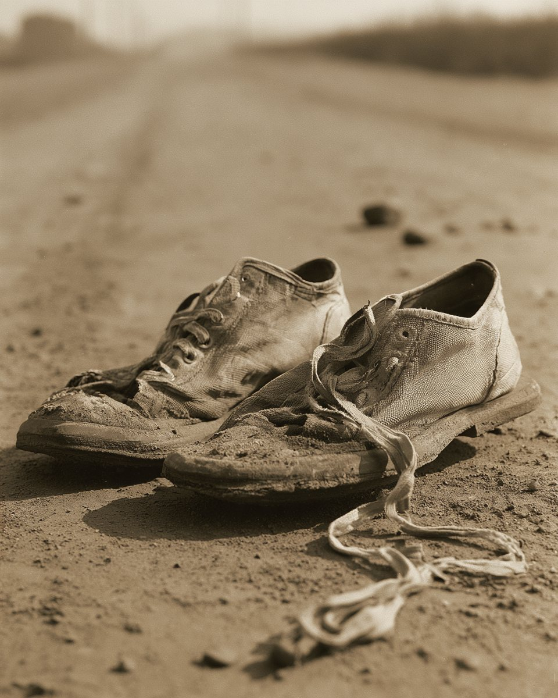
- 밤 열한 시 이 분
사옥의 스피커로 라듸오 중계가 세종로에 울렷소.
- 밤 열두 시
손 군이 넷재로 십칠 킬로 반을 지날 즈음 — 중계가 끈혓소.
- 새벽 한 시 반
사옥 이층 창문에서 한 녀자가 외첫소. 「손긔졍 군이 우승을 차지햇고 — 」 사람들은 우산을 내던젓소.
근거 · 동아일보 2006년 4월 1일 창간특집 「1936년 8월 10일 새벽 동아일보 앞 뜨거웠던 함성」 · 구간 기록과 순위 · Olympedia 「1936 마라톤 결과」 (15km 49:45 · 28km 자바라 낙오 · 31km 손기정 선두)
그날부터 닷새, 경성의 지면은 기뻐하엿소. 아직 아모것도 지우지 안코.
기뻐한 지면
날짜를 넘기며 그 닷새 가운데 네 날의 지면을 읽으시압. 넷째 장 팔월 십삼일 — 이날 처음으로, 다른 판의 사진에서 가슴이 지워지오.
「우리는 이미 헐린 성일망정
동아일보 소화 십일 년 팔월 십일일자 일면 「세계제패의 개가」 — 마라손 승자를 마즈려 성벽을 헐엇다는 희랍 고사를 들어「헐린 성」 — 나라를 일흔 땅을, 지면은 그러케 불럿소.
새 힘과 새 마음으로 우리 두 용사를 맞어 드리리라.」가튼 말이, 세 번 지면에 올랏소
- 8.9경긔 당일 · 팔면
「우리는 이미 헐린 성일망정 두 문을 활짝 열어 맞어드리리라.」
- 8.11우승 이튿날 · 일면
「이미 헐린 성일망정 새 힘과 새 마음으로…」
- 8.16「마라손의 전설과 유래」 · 삼면
「이미 헐린 성벽이어니 우리는 길을 쓸고 문전을 닦어…」
원문 대조 · 네이버 뉴스 라이브러리 (동아일보 1936.08.09 8면 · 08.11 1면 · 08.16 3면)
그런데 그 닷새 동안 — 시상대 우의 그는, 웃지 아넛소.
가슴을 가린 나무
팔월 구일, 백림 올림픽 스타디움. 그는 고개를 숙엿고, 두 손에 든 묘목을 가슴께까지 끌어올렷소.
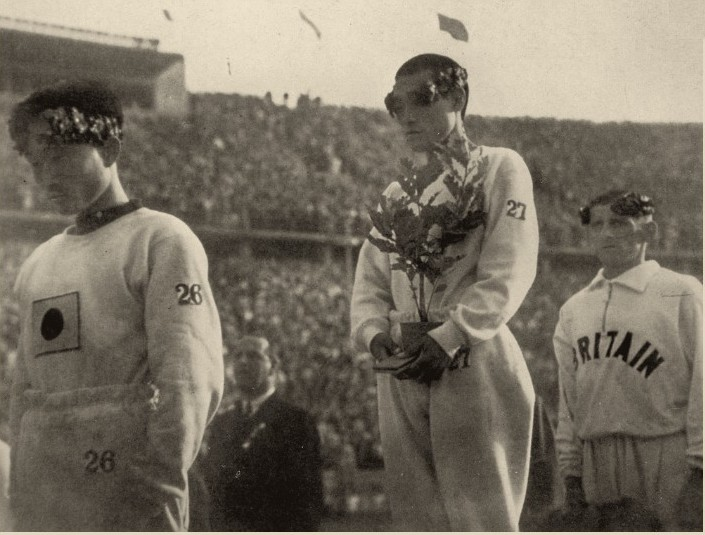
가운데 — 손긔졍.묘목 화분이 가슴의 표지를 가리고 잇소.왼편 — 남승룡.
그의 가슴에는, 가릴 것이 업섯소.
그 나무
- 우승자에게 준 묘목은 오래 「월계수」로 불럿소. 실은 — 대왕참나무엿소.
- 그는 이 나무를 가지고 도라와, 다니든 양정고보 교정에 심엇소.
- 나무는 아즉 살아 잇소. 서울 중구 만리동 손기정체육공원에.
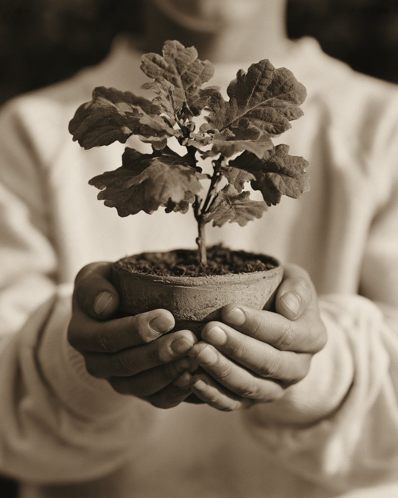
한 사람은 나무로 가렷소. 이제 — 신문이 가릴 차례엿소.
근거 · 실제 기록 사진 (1936년 8월 9일 베를린 시상식) · 교육과 문화 「대왕참나무 혹은 손기정참나무」 · 서울시 미디어허브 「손기정체육공원」
팔월 이십오일, 광화문통 동아일보 편집국. 사진 한 장이 책상 우에 노엿소.
그 가슴을,
지면에 그대로 실을 수는 업섯소.
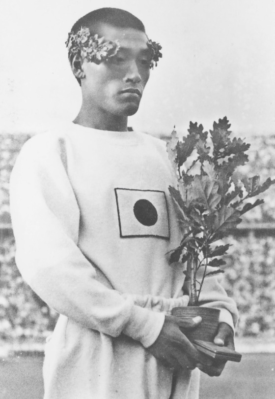
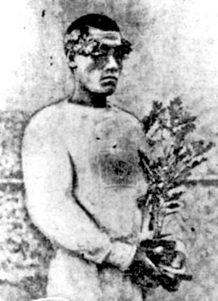
그날 편집국의 손이 되어, 가슴의 표지를 문질러 보시압.
- 체육긔자 이길용이, 조사부 이상범 화백에게 청햇소 — 「흐릿하게 해 주시오」.
- 화백의 붓이 사진 우의 그 자리에 색을 입혓소.
- 사진부 신낙균·서영호가, 동판에 남은 표지를 약물로 지웠소.
- 그리고 — 석간이 찍혀 나갓소.
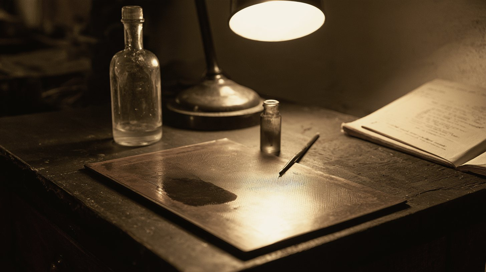
※ 우의 차례는 뒤에 경긔도 경찰부장이 올린 보고에 적힌 대로오. 잡아간 쪽이 남긴 긔록이오.
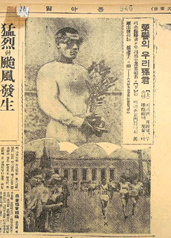
發覺 · 이번에는, 들켯소
- 8.25열이틀 전과 가튼 가슴이엇소. 그러나 이번에는 — 석간이 나간 그날, 총독부가 신문의 발매를 멈추고 관계자들을 끌고 갓소.
- 8.29무긔정간. 창간 뒤 네 번째엿소.
- 그 뒤같은 사진을 옮겨 실은 잡지 『신동아』 — 잡지부장도 끌려갓고, 잡지는 그 길로 끗이 낫소.
근거 · 한국민족문화대백과사전 「일장기 말소 사건」 · 위키백과 「일장기 말소 사건」 · 경인일보 「일장기 말소사건의 주역 이길용과 신낙균」(경기도 경찰부장 보고 인용) · 인쇄 사진 · 동아일보 1936년 8월 25일자 이면
그 붓질의 값은, 사람으로 치러졌소.
편집국 명부
사진이 나간 뒤, 동아일보 편집국의 의자들이 하나씩 비엇소.
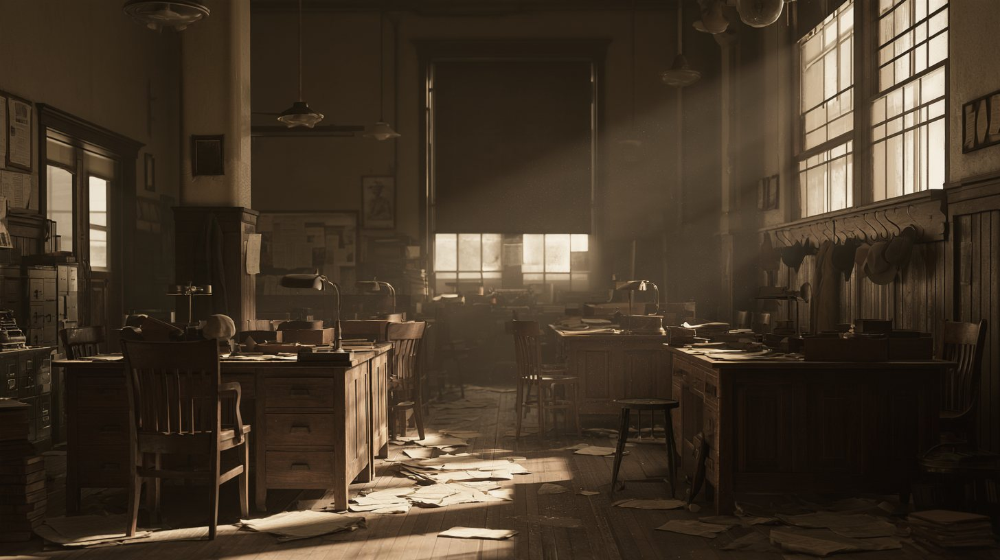
- 사회부장현진건소설 「운수 조흔 날」을 쓴 이拘禁
- 사회부이길용체육 긔자拘禁
- 사회부장용서긔자拘禁
- 조사부이상범화백拘禁
- 사진부신낙균拘禁
- 사진부백운선拘禁
- 사진부서영호拘禁
- 잡지부장최승만『신동아』에 가튼 사진을 옮겨 실은 책임拘禁
- 사장송진우辭任
- 주필김준연辭任
- 편집국장설의식辭任
약 사십 일 뒤, 여덟은 풀려낫소. 문을 나서기 전에 이런 글을 써야 하엿소.
- 다시는 언론긔관에 참여하지 아니함
- 시말서를 씀
- 다시 일이 나면, 가중 처벌을 달게 바듬
이길용은 그 일로 신문사를 떠낫소. 그리고 1950년 칠월 — 북으로 끌려가 도라오지 못하엿소.
근거 · 한국민족문화대백과사전 「일장기 말소 사건」 (구속 8명 · 약 40일 · 서약 3항 · 사임 3명) · OSEN 홍윤표 「일장기 말살의거 주역 이길용」 · 명부 모양은 재구성
아즉 풀리지 아니한 것
- 누구의 뜻이엇나
잡아간 쪽의 보고는 이길용의 한 마듸에서 일이 비롯햇다고 적엇소. 그러나 이길용 자신은 뒤에, 일장긔를 되도록 싣지 안는 것이 신문사의 오래된 방침이엇다고 말하엿소. 한 사람의 결단이엇나 — 편집국 전체의 뜻이엇나.
- 팔월 십삼일은 왜
같은 가슴이 열이틀 전, 팔월 십삼일에도 지워저 실렷소 — 동아일보 지방판 이면과 조선중앙일보 사면에. 그때는 아모 일도 업섯소. 왜 그날은 무사햇는지 — 긔록은 말이 업소.
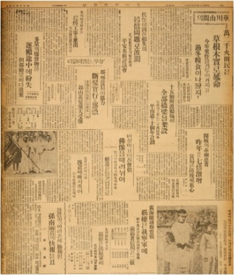
당대 다른 신문조선중앙일보 · 팔월 십삼일자 사면 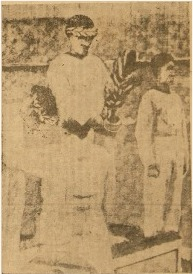
당대 다른 신문그 지면의 사진 — 가슴이 비어 잇소 조선중앙일보 1936.08.13 · 국립중앙도서관 소장 · 몽양여운형아카이브 제공 · 공공누리 제4유형(출처표시·비상업·변경금지) — 원본 그대로 실음
근거 · 경인일보 「일장기 말소사건의 주역 이길용과 신낙균」 (이길용 회고 · 경찰 보고 인용)
팔월 이십구일, 동아일보는 — 입을 다물어야 하엿소.
소화 십일 년 팔월 이십구일 — 소화 십이 년 유월 이일
이백칠십팔 일
총독부는 무긔정간을 명하엿소. 그날부터, 동아일보의 지면은 날마다 비어 잇섯소.
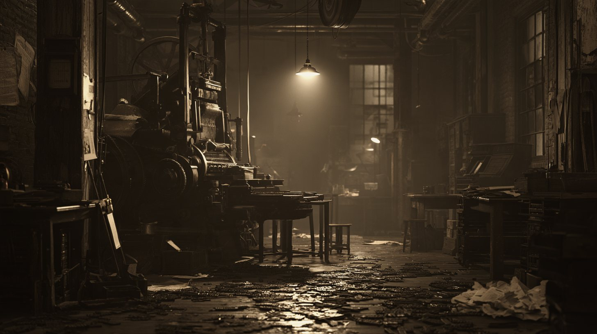
- 8.29정간
- 9.5조선중앙일보도 스스로 문을 닷앗소
- 10.17손긔졍 군, 여의도 비행장에 내리다
- 1937.6.2마지막 빈 날 — 이튿날 속간
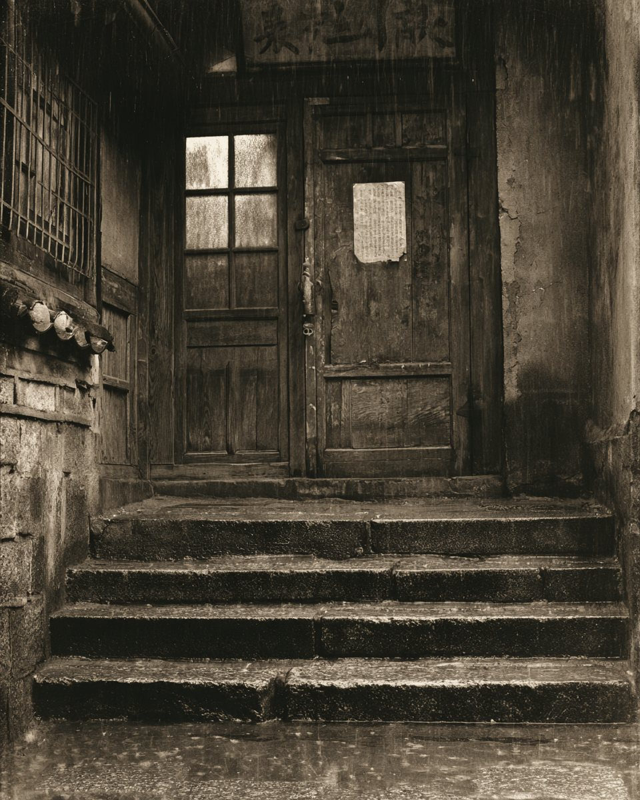
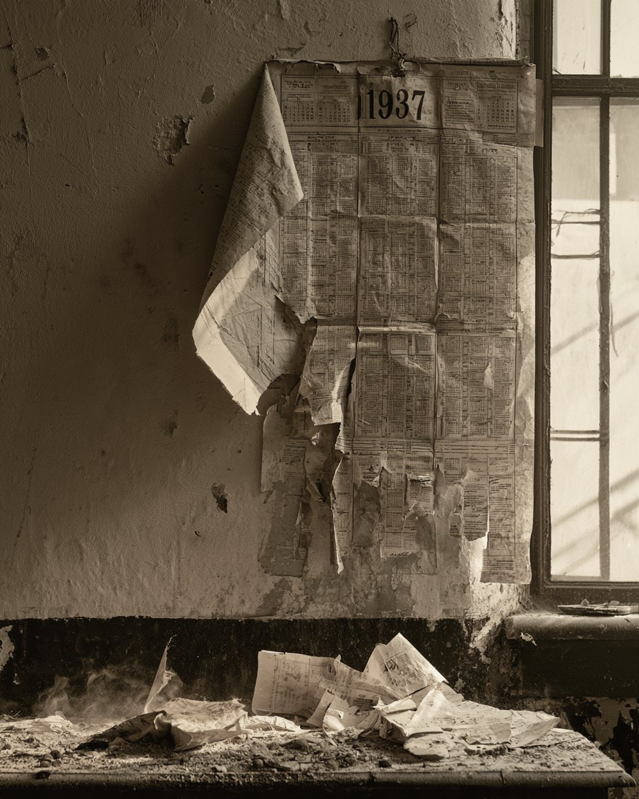
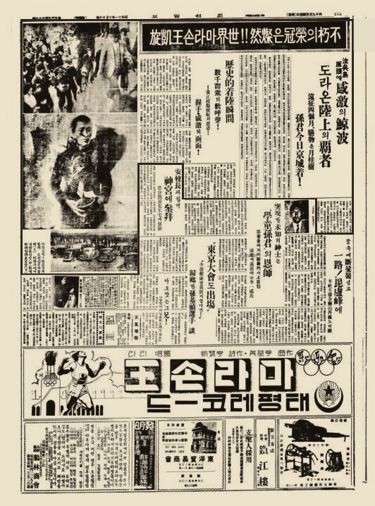
시월 십칠일, 그가 도라온 날
넉 달 만에 경성 하늘로 도라온 그를, 여의도 비행장의 사람들이 마젓소. 그러나 그 소식을 — 동아일보는 실을 수 업섯소.
그날의 개선은, 조선일보 시월 십팔일자 지면에 남아 잇소.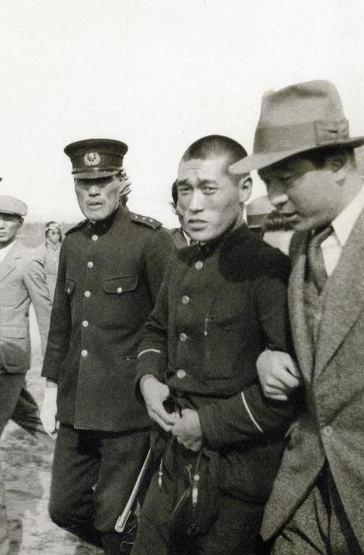
「…아무런 환영 절차 없이 나는 이들에게 이끌려 승용차에 올라탔다. 그때까지 정복을 입은 순사가 내 뒤를 따르고 있었다. 죄수 호송과도 같은 장면이었다.」
손긔졍 자서전 『나의 조국 나의 마라톤』환영 행사는 모다 금지되엇소. 경찰은 그를 곳장 남산의 조선신궁으로 데려갓소.
사진 · 손기정기념관 「이 달의 유물」 vol.2 · 서울시 미디어허브 「올림픽의 환희가 숨 쉬는 이곳」
그리고 소화 십이 년 유월 삼일 아츰 — 속간.
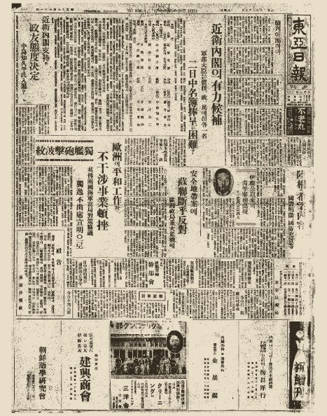
근거 · 한국민족문화대백과사전 (정간 1936.8.29 → 속간 1937.6.3 · 조선중앙일보 9.5 휴간) · 278일은 지면이 나오지 아니한 날(8.29~6.2)을 하로씩 센 것, 흔히 「279일」로도 적힘 · 조선일보 1936.10.18
시간을 조곰 되돌리오. 사진이 지워지기 열흘 전 — 그는 이미, 제 일홈을 제 글씨로 적어 두엇소.
손긔졍 KOREAN
가슴의 표지는 남이 정햇소. 그러나 일홈은 — 그가 적엇소.
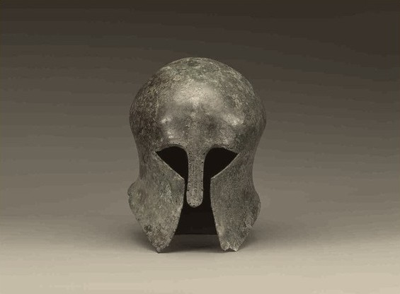
OLYMPIC RESULTS · BERLIN 1936
Athletics · Marathon (Men)
지운 것은 가슴의 표지 하나엿소. 지우지 못한 것은 — 그가 스스로 적은 일홈이엇소.
근거 · 헤럴드경제 「“KOREA에서 온 손긔졍” 마라톤 영웅, 일부러 ‘한글 사인’ 했다」(2025.7.24) · 다음뉴스(2025.8.14) · 투구 · 보물, 국립중앙박물관 소장
지워진 자리는 1936년에 끗나지 아넛소. 그 뒤에도 지면은, 여러 번 비워졌소.
지운 자리는, 그 뒤에도
라듸오를 켜고 다이알을 돌리시압. 일장긔를 지운 그 지면에서, 다른 빈자리들이 잡히오.
그때는 표지를 지웠고,
그 뒤에는 긔사가 지워졌소.
빈자리는, 무엇이 지워졌는지를 말하오.
신문의 빈자리를 지나 — 다시, 그 사람에게로.
그 뒤 · 그의 가슴에 달린 것들
가슴의 표지는, 네 번 바뀌엇소.
- 1936
백림의 전광판 — 「SON · JAPAN」. 일장긔가 올라갓소.
실제 기록 영상 - 1945
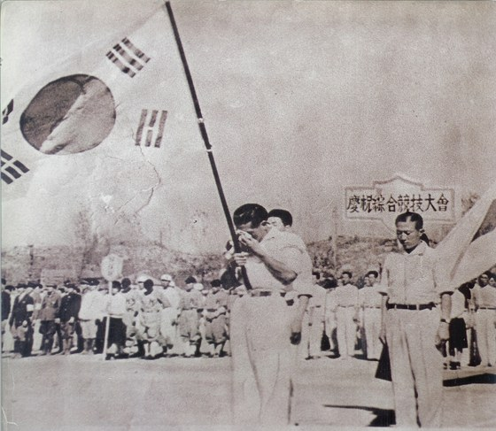
광복 뒤의 경축 경긔대회. 태극긔에 얼굴을 묻엇소.
실제 기록 사진독립긔념관 - 1988
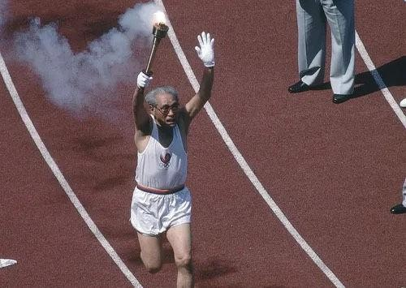
서울 올림픽. 성화를 들고 제 나라의 경긔장에 드러섯소.
실제 기록 사진손긔졍긔념재단 제공 · 중앙일보(2017.11.2) - 지금
OLYMPIC RESULTS · BERLIN 1936
1SON KiteiJPN2002년 그가 떠난 뒤에도
국제올림픽위원회 공식 긔록. 전광판의 일홈 그대로요.
실제 기록olympics.com
1988년 — 본래 그는 마지막 주자로 정해져 잇섯으나, 일본 신문에 먼저 알려지자 개막 전날 밤 계획이 바뀌엇소. (동아일보 2018.9.17 회고 보도) 그날 동아일보 석간 6면 제목은 「孫基禎씨 聖火 도입주자로」.
근거 · 영상 — 유튜브 「손기정 선수 마라톤 우승 영상 (1936년 베를린 올림픽)」(역사매니아) 재인용 · 독립기념관 · 뉴시스(2021.7.14) · 한국민족문화대백과사전 · olympics.com 선수 기록
소화 십일 년 · 백림에서 경성까지
- 그는 일등이엇소.
- 가슴에는, 제 나라가 아닌 표지가 잇섯소.
- 한 사람은 나무로 가렷고, 몇 사람은 붓으로 지웠소.
- 그 값으로 여덟이 끌려갓고, 신문은 아홉 달 동안 말을 일헛소.
지운 자리는,
비어 잇지 안소.
그 자리에 무엇이 잇섯는지 — 모다가 알앗기 때문이오.
경성의 밤은 아즉 길소.


당시 지면 (신문 아카이브)
- 조선일보 팔월 십일 호외우승 속보
- 동아일보 팔월 십일일자세계 제패의 개가 · 성전의 경과
- 동아일보 팔월 십삼일자조선의 아들 손기정 (3)
- 동아일보 팔월 이십오일자영예의 우리 손군 — 일장기를 지운 사진
- 조선일보 시월 십팔일자개선 귀국 · 여의도 비행장
그 밧긔 자료
- 한국민족문화대백과사전 「일장기 말소 사건」 — 날짜 · 지면 · 구속자 · 서약 · 정간
- 교육과 문화 「대왕참나무 혹은 손기정참나무」 · 서울시 미디어허브 — 시상대의 묘목
- 헤럴드경제(2025.7.24) — 엽서의 한글 서명 「손긔졍 KOREAN」
- 다음뉴스(2025.8.14) — 묘목으로 가린 가슴 · 공식 기록의 국적
- OSEN 홍윤표 「일장기 말살의거 주역 이길용」 — 이길용의 그 뒤
- 경인일보 「일장기 말소사건의 주역 이길용과 신낙균」 — 경기도 경찰부장 보고 · 이길용 회고
- 위키백과 「일장기 말소 사건」 — 8.25 당일 발매 중지 · 연행
- 조선중앙일보 1936.08.13 — 국립중앙도서관 소장 · 몽양여운형아카이브 (공공누리 제4유형)
- 뉴시스(2021.7.14) — 1988 성화 · IOC 기록
- 라디오 원고 (1968 · 1974 · 1980 · 1986) — 각 칸에 적은 출처를 따름
- 머리 그림 · 재현 그림 — 재현(AI 생성), 그림마다 '재현' 표기
이 긔사가 지킨 것
- 옛 지면을 옴길 때는 어느 신문인지 밝혓소
- 조선일보 지면은 조선일보라 적엇소
- 확인되지 안는 일화는 싯지 아넛소
- 재현 그림은 그림마다 '재현'이라 밝혓소